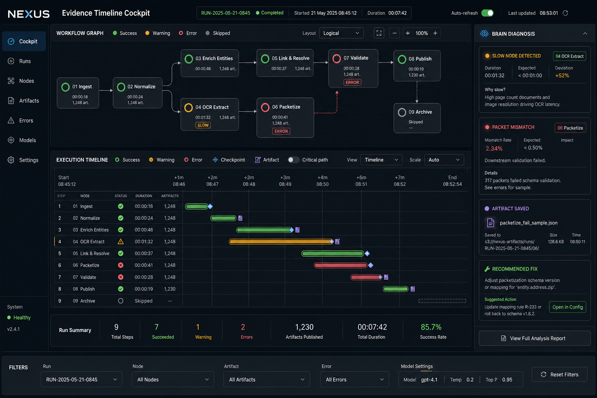
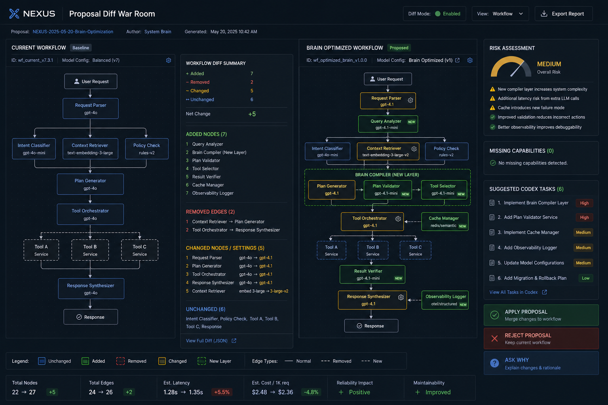

Page 01
現況起點
這次不是從零開始。現有 Graph 已經具備 React Flow、自訂節點、自訂 edge、 runtimeLite、Input/LLM/Image/Output、拖曳新增、Start All、Generated 歷史、節點刪除、 LLM reasoning、Image quality/ratio。高 ROI 路線是把它升級為 Workflow Pro， 不是重建一套平行 graph。
這份報告把目前 Graph MVP、runtimeLite、artifact backend、Supabase/Vercel 邊界、 Workflow Brain 合約、檔案節點與編譯層、以及 23+5 輪工程路線收斂成一個可開工的工程契約。
這次不是從零開始。現有 Graph 已經具備 React Flow、自訂節點、自訂 edge、 runtimeLite、Input/LLM/Image/Output、拖曳新增、Start All、Generated 歷史、節點刪除、 LLM reasoning、Image quality/ratio。高 ROI 路線是把它升級為 Workflow Pro， 不是重建一套平行 graph。
runtime state 可以跑，但還不夠讓 Workflow Brain 理解 intent、rationale、limits。
人類看的圖與 LLM 接手的結構需要分開存放，但彼此要可互相引用。
generated assets、file node、compiler layer 不能變成孤立 local-only 狀態。
一份 `nexus.workflow.v1` JSON 應該能生成 workflow、說明 workflow、餵給 Workflow Brain、 驗證能力邊界、橋接 runtimeLite、記錄 artifacts，並讓大腦提出可落地的優化版 workflow。
只採用概念 5/6 的資訊結構，不採用彩色視覺。Workflow Pro 會維持現有 NEXUS 暗色、 低彩度、細線、玻璃、工具型密度。Evidence Timeline 與 Proposal Diff 應該用切換視圖， 不要同時擠在畫面上。


src/lib/nexus-types.ts src/store/nexus-store.ts src/lib/workspace-kernel.ts src/components/nexus/nexus-ops.tsx src/components/nexus/nexus-graph.tsx src/lib/workflow-runtime-lite/* src/lib/attachments/* src/lib/backend/artifacts/* src/app/api/v1/artifacts/* supabase/migrations/*
src/components/nexus/workflow-pro/ src/lib/workflow-pro/contract/ src/lib/workflow-pro/brain/ src/lib/workflow-pro/file-node/ docs/workflow-pro/ reports/v22-workflow-node-upgrade-20260603/workflow-pro-engineering-launch/
2 輪，已完成規劃掃描。
3 輪，view mode、shell route、runtime bridge。
3 輪，workflow JSON、brain、compiler。
8 輪，Workflow Pro surface 與主要視圖。
3 輪，artifact、file persistence、RLS gate。
7 輪，docs、cleanup、tests、Vercel preview。
Vercel 使用 preview deployment 與 env-aware build 作為驗證門。Supabase 新表與 storage bucket 不是第一步，先用既有 workspace state 與 artifact service；只有當現有 artifact/state 無法表示 Workflow Pro 事實時才加 migration，並同步設計 RLS。
大腦不是只在跑完後摘要，它必須在開始前讀懂 workflow。它要知道順序、串聯、並聯、原因、 能力邊界、缺少功能、artifact policy、compiler registry，並能輸出 optimizedWorkflow 與 missingCapabilities 給 Codex 升級。
File node 應該讓文字 packet 和檔案一起通過 workflow。第一版保留 no-op compiler， 未來再掛 zip extract、PDF parse、image caption、audio transcribe、video shot list、 CSV profile 等轉換器。空編譯層是插件架構，不是多餘步驟。
用 workflow-pro folder 與 docs/workflow-pro 分層，不塞回 nexus-graph。
capabilityInventory 必須寫出 available 與 notAvailableYet。
優先 artifact service，migration 需 RLS 設計後才做。
只用概念資訊架構，不用彩色設計。
{
"schema": "nexus.workflow.v1",
"intent": "string",
"successCriteria": ["string"],
"capabilityInventory": {
"availableNodeTypes": ["input.text", "model.llm", "model.image", "output.text"],
"availableCompilers": ["compiler.noop"],
"notAvailableYet": ["condition.ifElse", "model.video", "parallel.fanOut"]
},
"nodes": [],
"edges": [],
"brain": {
"readBeforeRun": true,
"canPropose": ["prompt rewrite", "node insertion", "optimized workflow"]
}
}
下一個工程起手式建議是：開始 Stage 2/R3-R5，加入 `workflow-pro` view mode、 路由到 skeleton Workflow Pro surface、保留 Graph 不動、補 view mode persistence 與 snapshot sanitizer 測試。這是最穩的第一刀。
若測試失敗，停止 landing，新增 3-6 輪診斷，先處理第一個失敗 gate，再重新估算。